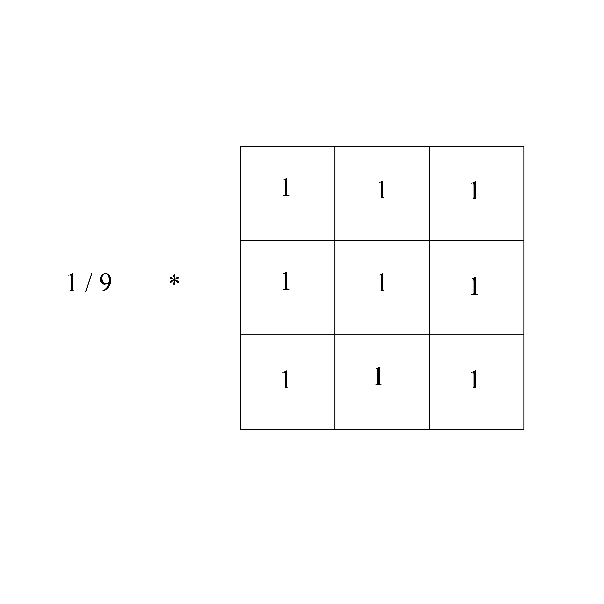

- Algorithms
- Invert
- Gamma
- Box Blur
- Sobel Edge Detector
How Invert works
Color inversion is when the luminance of the pixel gets mapped to the opposite. In other words, white gets mapped to black and black is mapped to white. If we assume an image with the color channels red, green, blue and 8 bits per channel, then the formula to map the luminance value is given by:
Iinvert(x, y) = Luminancemax - I(x, y)
where I is the image, Luminancemax is 255 for an image with 8 bits per color channel, and x and y are the coordinates of the pixel. Using the above formula, if you have the RGB pixel I(x, y) = (50, 120, 200) then Iinvert(x, y) = (205, 135, 55).How Box Blur works
Box blur is a convolution filter that blurs an image. It is also known as a mean filter. What it essentially does is take the average of the pixel it is centered on and all of the neighboring pixels within the filter's radius. Then it uses the averaged value for the blurred image.
The kernel used for the box blur convolution filter in image processing comes in the form of an nxn matrix divided by the scalar value of n * n where n is the diameter of the kernel in pixels. For example:

3x3 Box Blur Kernel
The above kernel is 3 pixels wide by 3 pixels high. Each square overlaps a pixel on the image. The kernel can be any diameter from 1 to ∞; larger kernels create a stronger blur. They are odd in size because they need to be centered on a pixel.
Heres a demo of how box blur kernel convolves with an image:

Short demo of 3x3 box blur. The right matrix is the original image and the left matrix is the result of the convolution of the box blur kernel and the right image.
The kernel starts at the first pixel of the image at the top left corner, with the value of 25. It continues by sliding to the right and calculating the average of each pixel within the kernel window at each pixel until the end of the first row then moves down to the next row.
How Gamma works
Gamma, otherwise known as gamma encoding and decoding, or gamma correction, refers to expanding or compressing an image's range of intensity values. When an imaging system captures an image the light intensity information is captured linearly. In other words, if the light intensity is recorded by the camera with a value of 100, then 200 would be the equivalent of twice the brightness of 100. However, the human vision system perceives light nonlinearly. We are more sensitive to darker tones than lighter tones. Gamma encoding takes advantage of our perception of light intensity by transforming the linear output of digital imaging devices into a perceptually uniform scale.
An example of perceptual brightness vs linear brightness differences is shown by the diagram below:
Perceptually linear image

Linear image
The above images show the effect of an encoded image and an image without gamma encoding. The transformation for gamma encoding is:
Iencoded(x, y) = Ilinear(x, y)1/γ
where γ is the gamma value, x and y are the pixel coordinates, and I is the image.
The difference in value between each shade for the perceptually linear image isn't the same; however, the delta between each shade on the linear image is the same. However, the linear image doesn't appear to have a natural progression between each shade while the perceptually linear image does. The difference between each shade looks more uniform in the perceptually linear image because of our nonlinear vision system. When being displayed the monitor and GPU apply another gamma transformation, which is supposed to effectively undo the gamma encoding already applied to image. This is known as gamma decoding. The transformation used for gamma decoding is given by:Ilinear(x, y) = Iencoded(x, y)γ
The monitor expects a gamma to be applied to the image before being displayed. The reason why the perceptually linear image looks uniform is because the gamma applied by the display devices closely approximates the perceptual uniformity the human vision system expects. For most display devices, the gamma encoding they expect is given by:Iencoded(x, y) = Ilinear(x, y)1/2.2
Then to display the image, the monitor will apply the gamma:Ilinear(x, y) = Iencoded(x, y)2.2
to decode the image.Why Gamma is Useful
Generally images are stored using 8 bit RGB channels.
Looking at the above linear and perceptually linear image, if 8 bits were used
for the linear images, then too many bits would be used to represent lighter values, while
too few would be used for darker tones, which humans are more sensitive too. In order to describe
more darker tones using linear gamma encoding, one would have to use 11 bits to get sufficient
representation to avoid image posterization.
In other words, 11 bits has to be used in order to get smooth gradients in the image, which are
important for things like skies. However, if images are stored using 8 bit gamma encoded values,
then it's possible to get smooth gradients using only 8 bits because gamma encoding redistributes
tonal levels closer to how our eyes perceive them
. Gamma encoding helps describe images using fewer
bits, thus using less storage and memory.